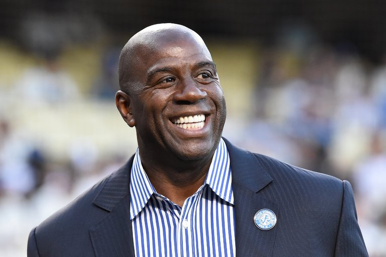

Magic Johnson Has A Bold New Way To Attract Big Name Free Agents
March 2, 2018

LOS ANGELAS- In an interview with ESPN Magazine the former player turned general manager Magic Johnson discussed how he could possibly attract some All-Star caliber players to the struggling Lakers franchise. Magic Johnson divulged that he had a master plan that would soon take action. When pressed for answers, Magic confessed that he intended to infect LeBron James mother Gloria with the HIV virus and only give him the antidote after he signed with the team. This bold strategy has already showed promise as mere minutes after the article was released, a weeping LeBron called the Lakers office begging for a contract offer. The 6'8 small forward is quoted saying "I'll do whatever you want, just please cure my family." Looks like the Lakers really plan to make a splash this off-season.